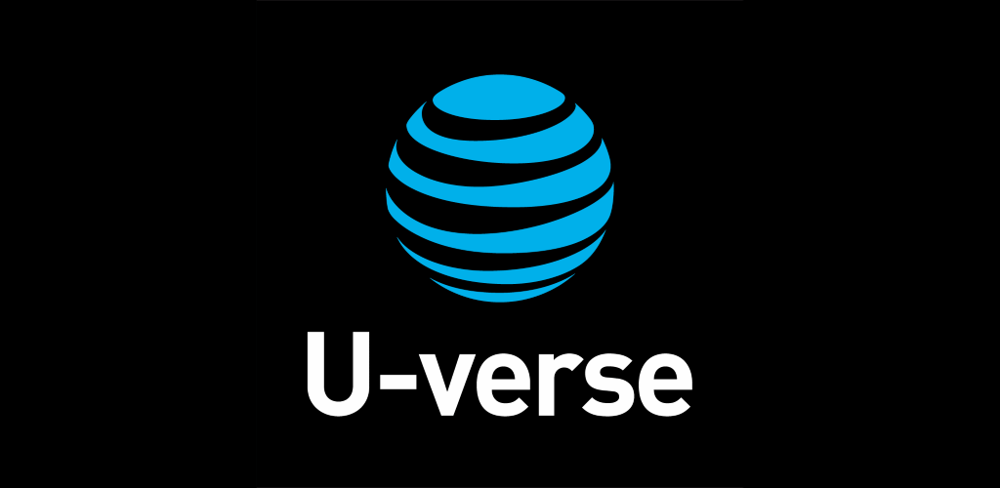
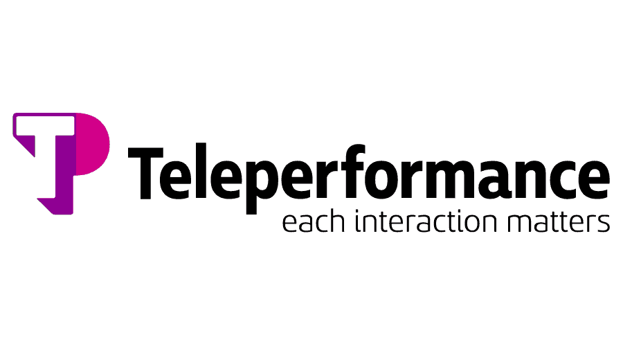
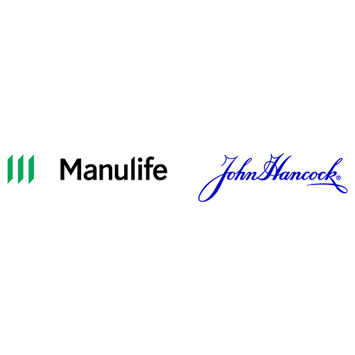

Over seven years of experience as a dependable and knowledgeable customer service representative with a wealth of knowledge giving support
in a telephone help center. strong commitment to assisting clients in resolving problems and fostering a favorable perception of
the business. Perform well both alone and in groups.
October, 2015 - May, 2015
As a healthcare customer support, my duties and responsibilities typically involve assisting customers or patients with their inquiries, concerns, and complaints related to healthcare services. Here are some key responsibilities:
Responding to inquiries: Responsible for addressing customer inquiries promptly and accurately, providing information about healthcare services, coverage, procedures, and policies.
Troubleshooting and problem-solving: Provide technical support for healthcare-related software or assist customers in resolving issues they may encounter during the usage of medical devices or online portals.
Appointment scheduling: helping customers in scheduling appointments with healthcare providers, ensuring they have the necessary information regarding date, time, and any preparatory instructions.
Resolving complaints: Managing and resolving customer complaints or concerns in a professional and empathetic manner is an essential part of the role.I always work towards ensuring customer satisfaction and a positive experience.
Documentation and record-keeping: Maintaining accurate and detailed records of customer interactions is crucial for tracking issues, identifying trends, and providing valuable feedback to improve customer support processes.
Collaborating with internal teams: Liaise with other departments like billing, claims, or clinical teams to address more complex customer inquiries or escalate issues that require further attention.
Adhering to regulations and policies: Staying updated with healthcare regulations, such as HIPAA, and company policies is essential to maintaining patient privacy and handling confidential information appropriately.
Continuous improvement: Actively seeking feedback from customers and staying informed about industry developments can help you identify areas for improvement in customer support processes and suggest solutions.
As a healthcare customer support representative, our primary goal is to assist and ensure that customers have a positive experience while navigating through the healthcare system.

As a technical support representative for VOIP (Voice over Internet Protocol), Internet, and telephone services, your responsibilities will revolve around addressing customer inquiries and resolving technical issues related to these services. Here are some key duties:
Customer assistance: Customer assistance: Provide technical assistance to customers who are experiencing difficulties with their VOIP, Internet, or telephone services. This includes troubleshooting connectivity issues, identifying the root cause of problems, and guiding customers through step-by-step solutions.
Issue escalation and resolution: When faced with more complex technical issues that require advanced troubleshooting or intervention, we will escalate the problem to higher-level support teams or work collaboratively with technicians to resolve the issue promptly.
Service activation and setup: Assisted customers in activating new services or setting up their VOIP phones, routers, or other equipment. This may involve guiding them through installation processes, ensuring proper configuration, and troubleshooting any issues that arise during the setup.
Billing inquiries: Customers often have questions or concerns regarding their billing statements or charges. Provided accurate and detailed explanations of charges, investigate billing discrepancies, and assist with resolving any billing-related issues or disputes.
Customer education: Many customers may require guidance on how to use specific features or functions of their VOIP system, internet connection, or telephone services. Provide clear instructions, tutorials, or documentation to help customers make the most of their services and troubleshoot basic issues on their own.
Documentation and reporting: It is important to maintain accurate records of customer interactions, technical issues, and the steps taken to resolve them. Document troubleshooting steps, resolutions provided, and update customer profiles accordingly. This documentation helps track recurring issues, evaluate trends, and share insights with the technical support team for process improvements.
Stay updated on technology: Continuously update our knowledge about the latest advancements in VOIP, internet, and telephone technologies, as well as new features or updates to the services you support. This will enable you to provide up-to-date and accurate assistance to customers.
Our objective as a technical support representative is to provide excellent customer service, troubleshoot technical issues efficiently, and ensure customer satisfaction with their VOIP, internet, and telephone services.
June, 2016 - October, 2019

As an escalation desk representative for VOIP, internet, and phone services, your role is to handle complex technical issues and customer concerns that require higher-level intervention beyond what regular customer support teams can provide. Here are the key duties and responsibilities associated with this role:
Handle escalated issues: received and managed escalated customer inquiries, complaints, or technical issues that were not resolved at the initial support level. These could include advanced network troubleshooting, service disruptions, account configuration, or billing-related concerns.
Troubleshooting and problem resolution: Worked closely with customers to identify the root cause of their issues, perform in-depth troubleshooting, and find appropriate solutions. This may involve analyzing network traces, advanced diagnostics, or accessing specialized tools and systems to resolve complex problems.
Coordinate with different teams: As an escalation desk representative, we collaborate with various internal teams, such as network engineers, system administrators, or billing departments, to address customer concerns. This requires effective communication, ensuring proper issue handoff, and following up to ensure timely resolution.
Escalation management: Assessed the severity and urgency of escalated cases, determine appropriate escalation paths, and prioritize them based on the impact on customers or service level agreements. Liaise with management or senior technicians to ensure proper attention and resources are allocated to resolve complex issues.
Customer communication: Keeping customers informed about the progress of their escalated cases is crucial. Provided regular updates, explain technical jargon in a clear and understandable manner, and manage customer expectations regarding resolution timelines.
Record-keeping and documentation: Accurate documentation of escalated cases, including detailed steps taken, communication history, and resolutions offered, is essential. This helps in creating a knowledge base, tracking recurring issues, and sharing insights to enhance future troubleshooting processes.
Analyze trends and provide feedback: By analyzing escalated cases, we can identify patterns or trends in customer issues and provide feedback to relevant teams for process improvements or system enhancements. Sharing our insights can contribute to minimizing the number of escalations and improving overall customer satisfaction.
Continuous learning: As technology continues to evolve, staying updated with the latest industry trends, best practices, and new product features is crucial for an escalation desk representative. Continuous learning enables us to provide effective solutions and ensure the highest level of customer support.
Our role as an escalation desk representative is to provide prompt, efficient, and effective support to resolve complex technical issues, prioritize customer satisfaction, and ensure that any escalated cases are handled with the utmost care and expertise.
October, 2019 - September, 2020

As a log-in administrator, Our duties and responsibilities include:
User Account Management: We are responsible for creating, modifying, and disabling user accounts within the system. This includes assigning usernames, passwords, and access rights based on the user's role or responsibilities.
Password Management: Ensuring that strong password policies are in place and users adhere to them. This involves regular password resets, enforcing password complexity, and educating users about the importance of strong passwords.
Authentication and Authorization: We manage the authentication process, which involves verifying the identity of users attempting to access the system. This may include implementing multi-factor authentication methods for added security. You also define and manage user access levels, permissions, and rights to different resources within the system.
Account Security Monitoring: We monitor and analyze user account activities, looking for any unusual or unauthorized access attempts. This helps to identify and address potential security breaches or suspicious activities promptly.
Troubleshooting and Support: When users encounter log-in issues, you are responsible for providing technical support and troubleshooting assistance. We assist in resolving any log-in problems promptly and efficiently.
Security Policy Implementation: We play a crucial role in implementing and enforcing the organization's security policies and procedures related to log-in management. This includes educating users about best practices, keeping systems up to date with security patches, and ensuring compliance with relevant regulations.
System Maintenance and Upgrades: We collaborate with the IT team to ensure the log-in system is regularly updated and patched to address any security vulnerabilities. This involves testing new log-in features or system enhancements before deployment.
Documentation and Reporting: We maintain accurate records of user accounts, log-in activities, and access permissions. We generate regular reports on access patterns, failed login attempts, and security incidents for review by management and auditors.
Our duties vary based on the organization's size, industry, and IT. We always stay updated with best practices and emerging technologies to fulfill our role effectively.
September, 2019 - May, 2022
As an Email Support Representative for Boxcharm and Roblox, our duties and responsibilities include the following:
Customer Support: Responding to customer inquiries, concerns, and issues through email in a timely and professional manner. This involves addressing questions about products, troubleshooting technical problems, and providing assistance with account-related matters.
Technical Troubleshooting: Assisting customers with technical issues they may face while using Boxcharm or Roblox platforms. This could involve helping with login problems, payment issues, game-related glitches, or any other technical difficulties that users encounter.
Product Knowledge: Developing a deep understanding of the Boxcharm and Roblox products, features, and policies. This allows you to provide accurate information and guidance to customers and help them make the most of their experience.
Issue Resolution: Investigating and resolving customer complaints or issues by collaborating with other internal teams like IT, billing, or game development. This may require escalating complex or escalated problems to the appropriate teams for resolution.
Account Management: Assisting customers with managing their Boxcharm or Roblox accounts, which could include tasks like updating account information, resetting passwords, or resolving account-related security concerns.
Record Keeping: Maintaining accurate records and documentation of customer interactions, including issues raised, solutions provided, and any follow-up actions taken. This helps in providing efficient and consistent customer support and tracking recurring issues.
Quality Assurance: Adhering to predefined quality standards for customer service interactions. This includes ensuring that responses are accurate, helpful, and aligned with company policies and guidelines.
Continuous Learning: Keeping up-to-date with the latest product updates, features, and policies of Boxcharm and Roblox. This involves participating in ongoing training sessions and self-driven learning initiatives to enhance your product knowledge and customer support skills.
Additionally, providing excellent customer service, being empathetic, and maintaining a positive attitude are essential qualities for an Email Support Representative role.
October, 2022 - September, 2023

As a Business Process Associate in John Hancock Life Insurance, our duties and responsibilities may include:
Process Management: Collaborating with different teams to analyze, document, and improve business processes, ensuring efficiency and effectiveness. This may involve identifying bottlenecks, redundancies, or areas for improvement and suggesting and implementing process enhancements.
Data Analysis: Collecting, analyzing, and interpreting data related to business processes to identify trends, patterns, and areas of improvement. This may include generating reports, performing data validations, and making data-driven recommendations to streamline operations.
Documentation: Creating and maintaining documentation such as process maps, standard operating procedures (SOPs), and guidelines to ensure processes are well-documented and easily accessible for all stakeholders. This helps in ensuring consistency, compliance, and knowledge transfer within the organization.
Quality Assurance: Conducting audits and quality checks on processes to ensure compliance with internal policies, industry regulations, and service level agreements (SLAs). This involves identifying gaps or non-compliance issues and working with teams to address and resolve those issues.
Stakeholder Collaboration: Collaborating with cross-functional teams, including underwriting, claims, customer service, and IT, to understand their requirements, challenges, and feedback on existing processes. This helps in identifying opportunities for process improvement and enhancing overall customer experience.
Process Automation: Identifying opportunities for process automation using tools and technologies, such as workflow management systems or robotic process automation (RPA). Collaborating with IT and automation teams to implement automated workflows that improve efficiency and reduce manual efforts.
Continuous Improvement: Actively participating in continuous improvement initiatives by staying updated with industry best practices, process improvement methodologies, and emerging technologies. This involves seeking feedback, monitoring process performance, and recommending and implementing process enhancements.
Adapting to changing business needs, maintaining attention to detail, and having strong analytical and problem-solving skills are crucial for success in our role.